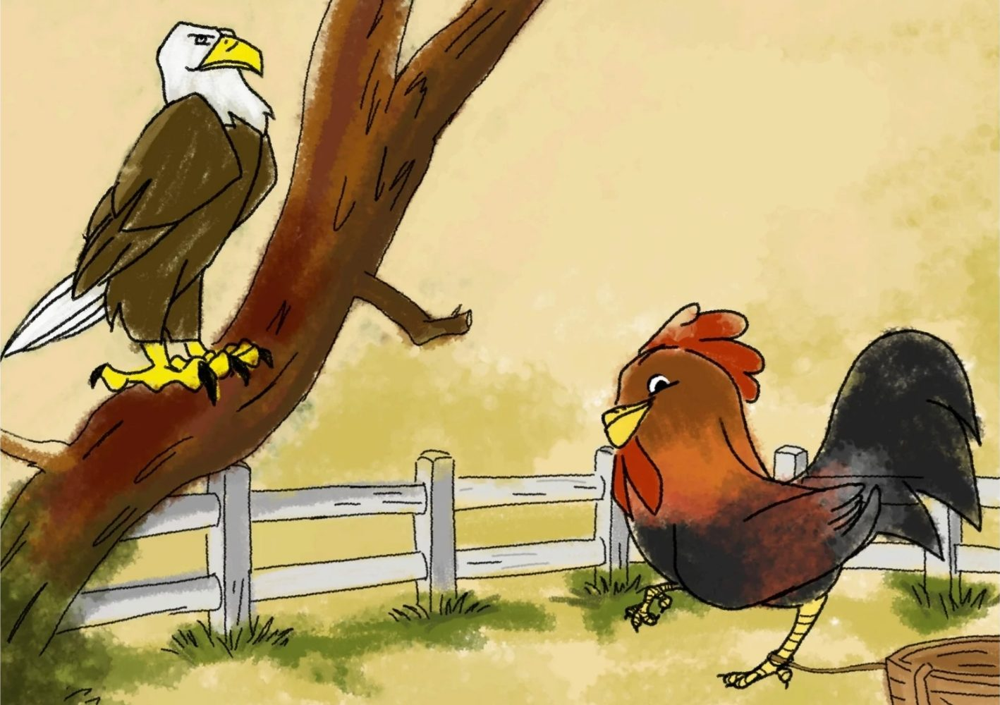
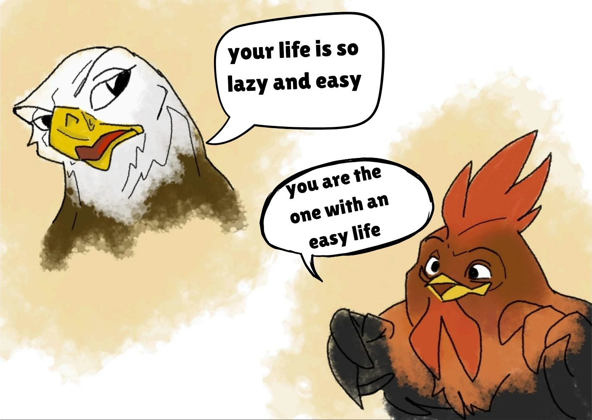
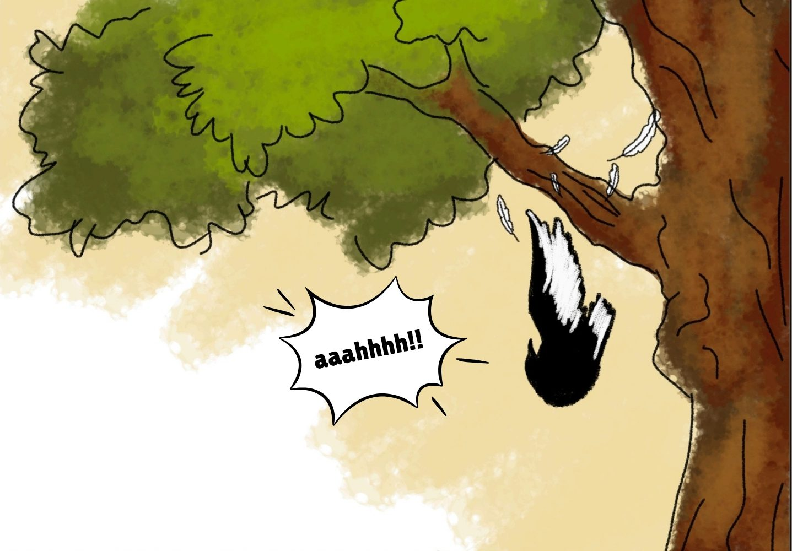
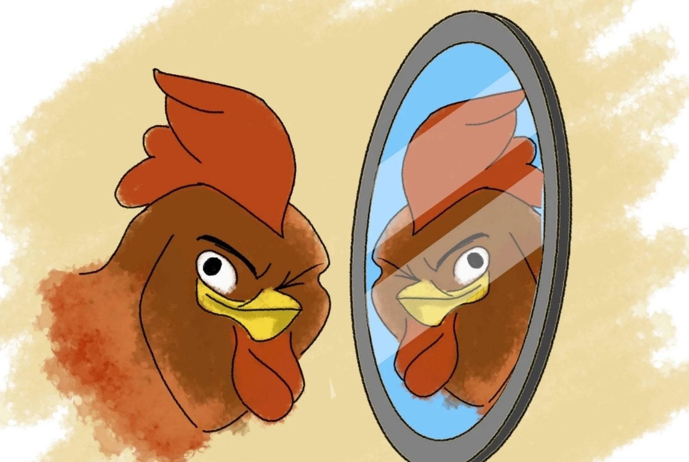
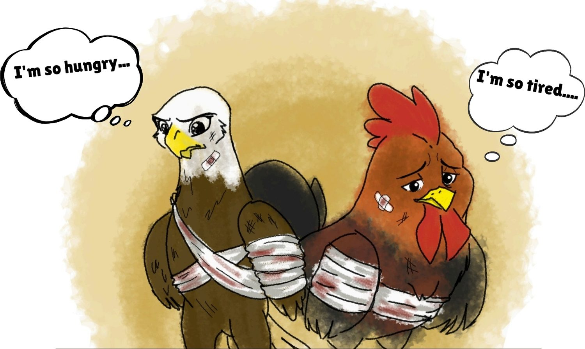
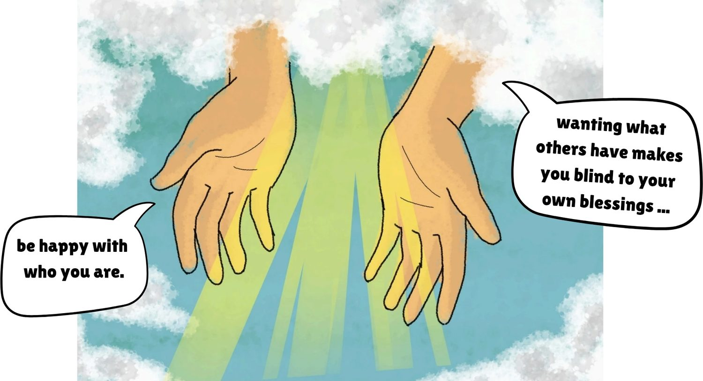
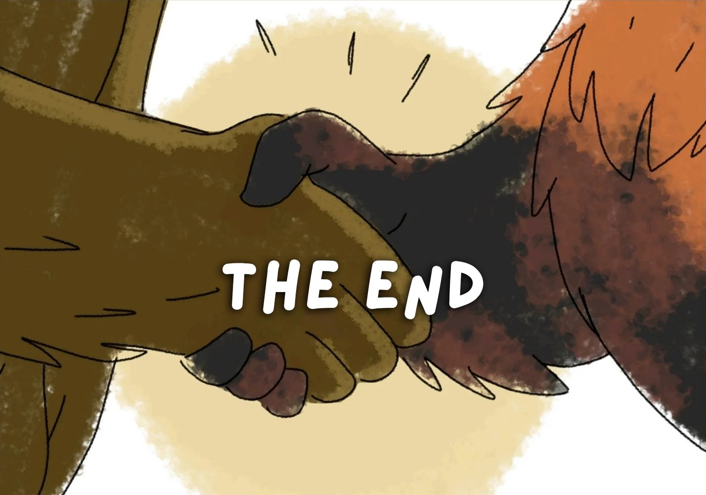

Story 02
The Wish

Great Book · Story 02
The Wish
00:00 --:--
The narration for this story has not been recorded yet.
Narrated by Jhaydee Aceña, Mary Ann Casalhay, John Bernard De Guzman, and Ayesha Sultan
Cockcock the chicken lived on a peaceful farm. Every single day, he ate rice and seeds, took naps, and walked around the dusty yard. Agila the eagle lived high in the mountains. Every single day, he flew across the sky and hunted for fish to eat.

One hot day, Agila flew down to the farm and saw Cockcock eating. “Your life is so lazy and easy!” Agila mocked. “You just eat and sleep all day!” Cockcock got angry and clucked back, “You are the one with the easy life! You have no owner, no cage, and you can fly anywhere you want!” They argued and argued. Finally, Agila said, “If I were you, I would love that easy chicken life!” Cockcock snapped back, “If I were you, I would love flying freely!” Cockcock jokingly wished that they could swap bodies. Agila the eagle had the same thought, but he did not say it. They both walked away, not knowing that the god named Lakapati had heard their wish.

The next morning, Cockcock woke up falling from a very tall tree! He flapped his wings in panic and flew, he was shocked! When he looked at his reflection in the river, he saw an eagle’s sharp face. He was now Agila! Meanwhile, Agila the eagle woke up inside the dirty chicken coop. He pecked at the grains the farmer gave him. When he drank water from a puddle, he saw a chicken’s round face, he was now Cockcock! At first, both were very excited.

As the days passed, things became awful. Cockcock (now an eagle) was always starving because he did not know how to hunt. He also kept running away from hunters who wanted to catch him. Agila (now a chicken) was forced by the farmer’s nephew to fight other roosters in the “sabong” (cockfighting) pit. He got cuts and bruises every single day, and he was locked in a tiny cage. He was so bored and tired.

One sad afternoon, the tired and wounded Agila (in the chicken’s body) pecked his way to the farm fence. At the same time, the weak and hungry Cockcock (in the eagle’s body) landed on that same fence. They stared at each other and saw how broken and miserable the other one was. They both started crying and said sorry. They realized they had been so wrong to mock each other’s lives. The eagle’s freedom was dangerous and hungry, while the chicken’s safety came with a cage and painful fights. They both prayed to Lakapati, begging to go back to their own bodies. They promised to never wish for someone else’s life again.

The kind spirit Lakapati heard their sad prayers. She appeared in a swirl of golden rice and said, “Wanting what others have makes you blind to your own blessings. Be happy with who you are.” She waved her hand, and in a blink, they were back to their real bodies! Cockcock woke up on the farm, hugged his fellow chickens, and happily ate his simple rice. Agila woke up on his mountain rock, spread his strong wings, and joyfully flew over the river. They both learned a very important lesson: being someone you are not can cost you who you are. They never wished to trade places again.

Check what you remember
-
What dangerous Filipino practice did Agila (as the chicken) have to do every day?
- Fighting with other birds
- Training with other roosters
- Cockfighting / Sabong
- Competing with other chickens
-
What food did the farmer give the chicken to eat on the farm?
- Rice and vegetables
- Rice and seeds/grains
- Seeds and fruits
- Grains and vegetables
-
Why was Cockcock (now the eagle) always hungry and weak?
- Because he was used to being fed and did not know how to hunt.
- Because he was used to hunting but did not know how to eat.
- Because he was used to eating and did not know how to fly.
- Because he was used to flying but did not know how to hunt.
-
What did the chicken and eagle learn at the end of the story?
- To be happy with their own life and avoid fighting others.
- To be happy with who they are and not envy another animal’s life.
- To accept their differences and follow each other’s lifestyle.
- To appreciate their lives but still wish to have what others have.
-
In the story, Agila (who was now a chicken) was put inside a ring to fight other roosters. What traditional Filipino event is this called?
- Fiesta, which is a big town festival with parades
- Sabong, a cockfight where roosters battle each other
- Harana, a serenade sung outside a loved one’s window
- Palayok, a game where you break a clay pot blindfolded